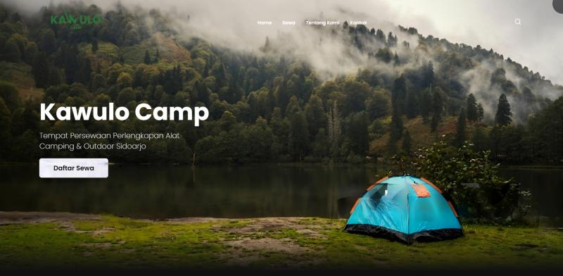

M. Syafi'ul Masruri
Informatics Management | Active student at Surabaya State University
 Universitas Negeri Surabaya
Universitas Negeri Surabaya
Sidoarjo, Jawa Timur, Indonesia
Hai, saya M. Syafi'ul Masruri, mahasiswa aktif semester 3 Manajemen Informatika Universitas Negeri Surabaya, tempat saya mengembangkan kemampuan untuk bisa terus berkarya dan belajar hal-hal baru. Perjalanan saya didasari oleh kerja keras, kehati-hatian dalam berbagai hal, terus belajar dan selalu beradaptasi dengan berbagai situasi, saat ini saya sedang mempelajari front end developer, analisis data, desain grafis dan saya tertarik pada Teknologi Informasi dan Komunikasi. Saya sangat antusias memberikan kemampuan yang saya miliki untuk dapat berkontribusi dalam tim dan proyek.
Proyek & Sertifikasi
-
Website Kawulo Camp
Sep 2024 - Okt 2024
Technologies : HTML, CSS, JavaScript, Web Development, Front-End Development
